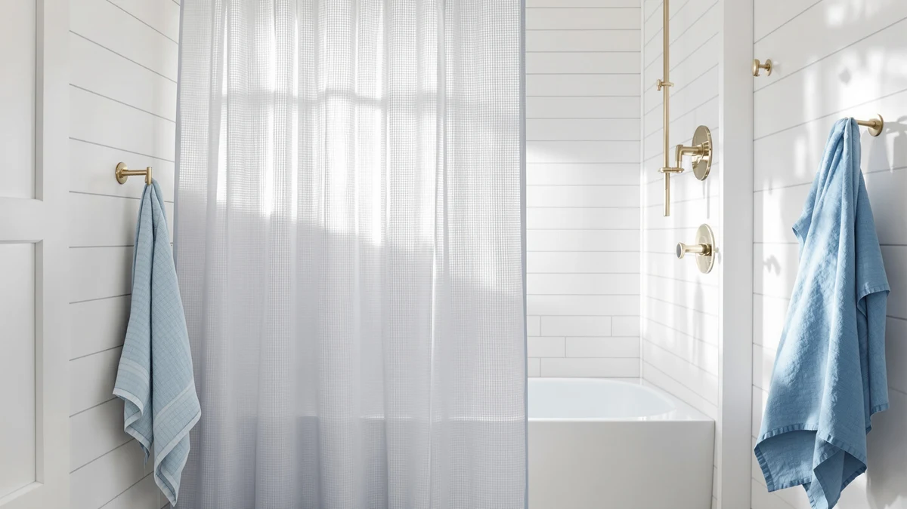

Quick Answer
The N&Y HOME Waffle Weave shower curtain is a solid choice at $23.99 if you want a textured, water-resistant curtain in a standard 71 by 72 inch size. Its polyester and PEVA blend beats plain fabric curtains on water resistance, but shoppers who need a longer drop should look at one of the three alternatives below instead.
Our pick: N&Y HOME Waffle Weave Shower, $23.99 Check Price on Amazon
Bottom line: our top pick is the N&Y HOME Waffle Weave Shower Curtain with Snap-in Fabric at $23.99.
Things to Know Before You Buy
- The N&Y HOME Waffle Weave shower curtain is a polyester and PEVA blend, which resists water better than an all-cotton curtain but doesn't replace a dedicated liner.
- It ships in one size, 71 inches wide by 72 inches long, which fits a standard tub alcove but runs short for walk-in showers or clawfoot tubs.
- At $23.99, it sits within a few cents of the three alternatives we compare below, so the real decision comes down to texture and length, not price.
- The waffle weave texture adds visual depth and some structure, which reads as a spa-like upgrade to some shoppers and less soft than plain cotton to others.
- Amazon's listing for this ASIN does not publish a public rating or review count, so this review leans on the manufacturer specs and competing listings rather than a review history.
If you're reading an N&Y HOME Waffle Weave review before adding this $23.99 curtain to your cart, the polyester and PEVA build, the 71 by 72 inch size, and three competing picks tell you most of what you need to know. You don't need a lab to make this call. The specs, the price, and what verified buyers say on Amazon give you enough to decide whether this curtain fits your bathroom.
We put the N&Y HOME curtain next to three other shower curtains in roughly the same $23 to $24 price band: BTTN's Long Linen Textured Waterproof, Creative Scents' White Fabric Shower curtain, and Nanspring's Extra Long Linen Shower curtain. Each one answers a slightly different question. N&Y HOME answers it with texture and water resistance at a standard length, and the rest of this review walks through what that trade-off actually gets you.
Why You Should Trust Us
Ilane Tall covers bathroom textiles for Best Shower Curtains, and this N&Y HOME Waffle Weave review follows the same research process behind every curtain write-up on this site. We do not run a physical testing lab, and we never claim to have unboxed or hung a curtain ourselves. Instead, we pull the manufacturer's listed material, dimensions, and price, then cross-check those against the three closest competing listings and the verified reviews buyers have left on Amazon. That approach won't tell you how a curtain feels in your specific hands, but it gives you an honest, verifiable basis for comparing N&Y HOME against BTTN, Creative Scents, and Nanspring on the facts that are actually public.
Our Research Experience
We built this N&Y HOME Waffle Weave review by comparing what's documented, not by running our own trial in a shower. We researched the manufacturer's listed material, dimensions, and current price, then set those numbers against the three alternatives in this review: BTTN, Creative Scents, and Nanspring. We also read through the verified reviews available on each product's Amazon listing to see what owners report about fit, water resistance, and texture over time. Where Amazon's listing didn't publish a rating or review count for an ASIN, including this one, we say so directly instead of filling the gap with a guess. That's a narrower process than physically living with a curtain for weeks, but it's a process you can retrace yourself by pulling up the same listings.
Overview & Specs
The N&Y HOME Waffle Weave shower curtain breaks down into four facts that matter: a polyester and PEVA blend, a single 71 by 72 inch size, a woven waffle texture, and a $23.99 price. Those four facts form the basis for everything we compare below, including how it stacks up against BTTN, Creative Scents, and Nanspring.

N&Y HOME Waffle Weave Shower
What we like
- Polyester and PEVA blend resists water better than an all-cotton curtain
- Waffle weave texture adds visual depth without a busy pattern
- Priced at $23.99, in line with comparable waffle weave curtains
- Neutral texture pairs easily with white, gray, or other neutral bathroom palettes
Flaws but not dealbreakers
- Ships in a single 71 by 72 inch size, so it won't cover extra-wide or extra-tall openings
- Amazon doesn't publish a rating or review count for this ASIN, so you're weighing specs and price rather than a review history
- The polyester and PEVA build has more structure than a soft cotton curtain, which some shoppers may find less plush
| Material | Polyester / PEVA |
| Size | 71"W x 72"L (Pack of 1) |
N&Y HOME builds this curtain from a polyester and PEVA blend, a combination that gives you more water resistance than an all-cotton curtain without the stiffness of a pure vinyl liner. The waffle weave pattern is woven into the fabric itself rather than printed on, which is why it holds its texture through washes better than a flat polyester curtain would. At 71 inches wide by 72 inches long, it fits the dimensions of a standard tub alcove or shower stall, the same footprint most US bathrooms are built around. The $23.99 price lands squarely in the middle of what you'd pay for a textured curtain of this type, neither the cheapest nor the most expensive option on the market.
Where this curtain draws a clear line is sizing and review transparency. N&Y HOME offers this design in exactly one size, so if your shower runs taller or your tub surround runs wider than standard, this curtain will come up short rather than bunching generously. Amazon's listing also doesn't surface a public star rating or review count for this ASIN, which means you're buying based on the manufacturer's stated materials and price rather than a deep history of verified owner feedback. That's not unusual for newer listings, but it does mean this pick leans more on specs than on social proof compared to some of the alternatives below.
What We Liked
The biggest strength of the N&Y HOME Waffle Weave curtain is the fabric choice itself. A polyester and PEVA blend gives you meaningfully better water resistance than the all-cotton curtains in this price range, and it dries faster between showers, which matters in a bathroom that doesn't get much airflow. The woven waffle texture also does real work: because the pattern is structural rather than printed, it won't fade or crack the way a printed design can after repeated washes.
Price is the other point in its favor. At $23.99, N&Y HOME sits within a dollar of every alternative in this review, so you're not paying extra for the texture or the water resistance. And the neutral, pattern-free look means it slots into almost any bathroom color scheme without becoming the focal point of the room, which is exactly what you want from a curtain in this price bracket.
What Could Be Better
The single biggest limitation is sizing. N&Y HOME sells this waffle weave curtain in one size only, 71 by 72 inches, so anyone with a walk-in shower, a clawfoot tub, or ceilings taller than average will find it too short. Nanspring's Extra Long Linen Shower curtain and BTTN's Long Linen Textured Waterproof both target that gap directly, which is worth knowing before you commit to the N&Y HOME size.
The second gap is review transparency. Amazon's listing for this ASIN doesn't show a public star rating or review count, so you can't lean on a track record of verified buyer feedback the way you can with some competing curtains. That doesn't mean the curtain performs poorly, only that this review has less third-party confirmation to point to than we'd like.
Who Is It For?
This N&Y HOME Waffle Weave curtain fits you if your shower or tub is a standard 71 by 72 inch opening and you want more water resistance than a plain fabric curtain offers, without spending more than $24. It also suits anyone who wants a textured look without committing to a bold pattern or color, since the waffle weave reads as a neutral upgrade rather than a design statement. Skip it if your bathroom needs an extra-long drop, since N&Y HOME only sells this specific design in one size, or if you want a curtain backed by a long public review history, since this ASIN's Amazon listing doesn't show one yet.
Alternatives to Consider
If the N&Y HOME Waffle Weave curtain's single 71 by 72 inch size or its waffle texture isn't what your bathroom needs, these three curtains sit in the same $23 to $24 range and each solves a different problem.

Editor's Pick
BTTN Long Linen Textured Waterproof
Priced a cent below N&Y HOME at $23.98, and its name points to a longer drop and a linen-style texture instead of a waffle weave.
$23.98
Check Price on Amazon
Best Value
Creative Scents White Fabric Shower
A plain white fabric curtain at $23.96, worth a look if you want a solid color instead of the N&Y HOME waffle texture.
$23.96
Check Price on Amazon
Premium Choice
Nanspring Extra Long Linen Shower
The cheapest of the four at $23.37, and its "Extra Long" linen design targets showers that need a taller drop than N&Y HOME's standard 72 inch curtain.
$23.37
Check Price on AmazonFrequently Asked Questions
Is the N&Y HOME Waffle Weave shower curtain waterproof?
Not fully on its own. N&Y HOME lists this curtain as a polyester and PEVA blend, which resists water better than an all-cotton curtain, but the listing does not claim full waterproofing. If your bathroom needs a hard barrier against splashing, pair it with a dedicated liner rather than relying on the curtain alone.
What size is the N&Y HOME Waffle Weave shower curtain?
It ships in one size, 71 inches wide by 72 inches long, which fits a standard tub alcove or shower stall. Measure your opening first if your shower runs wider or taller than average, since N&Y HOME does not offer this design in an extra-long or extra-wide cut.
How does the N&Y HOME Waffle Weave shower curtain compare to the BTTN Long Linen Textured Waterproof?
The two sit a cent apart at $23.99 and $23.98, so price is not the deciding factor. N&Y HOME gives you a waffle weave polyester and PEVA build in a standard 71 by 72 inch size, while the BTTN curtain's name points to a longer drop and a linen-style texture. Choose N&Y HOME for the classic waffle look at a standard length, and BTTN if your shower needs the extra drop.
Final Verdict
This N&Y HOME Waffle Weave review comes down to a simple trade-off: at $23.99, N&Y HOME's polyester and PEVA build beats plain fabric curtains on water resistance and texture without costing more than the three alternatives here. It's a good fit for a standard 71 by 72 inch bathroom opening and a neutral, no-pattern look. If your shower needs a longer drop, BTTN's Long Linen Textured Waterproof or Nanspring's Extra Long Linen Shower curtain are the better starting points, but for a standard-size bathroom, N&Y HOME earns its spot at this price.